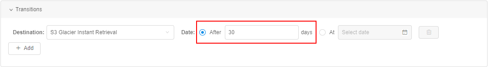
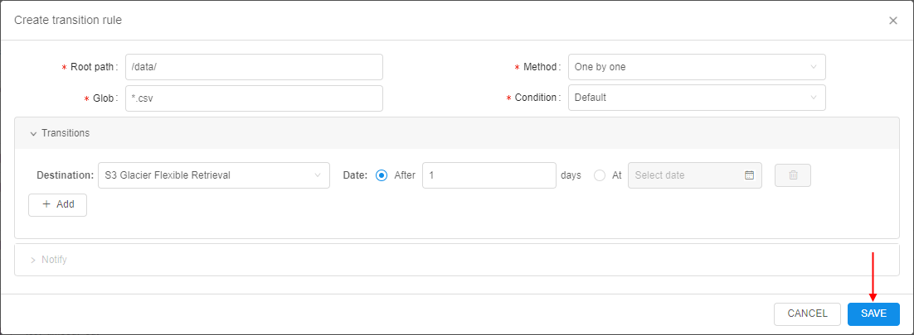

8.10. Storage lifecycle management
Note: currently, described functionality may be supported not by all Cloud Providers
Users have the ability to manage the lifecycle of data in storages - configure the automatic data transition from standard storage to different types of archival storages by occurrence of a certain event and restore that data back as well if needed.
That includes abilities:
- to create and edit multiple transition rules for a storage data based on file prefix and/or glob pattern
- to select an archive class as the data destination for each specific rule. Note: archive classes depend on the Cloud Provider
- to select the "deletion" operation as one of the possible data destinations - for the automated data removing
- to define the event by which the data shall be transferred
- to configure notifications:
- notifications on each lifecycle event
- ability to delay data transition using link from notification email
- to restore previously archived files and folders
Archiving
Note: only storage OWNER or users with the
ROLE_STORAGE_ARCHIVE_MANAGERorROLE_ADMINrole are able to manage the archival rules
Data archiving in any storage is defined by the set of transition rules.
For a storage, any count of transition rules can be created.
Each rule includes:
- source path inside the storage where data for the transition will be searched
- glob that defines which specific data shall be transferred
- event that defines when data shall be transferred
- notification settings
Once the rule is created and saved - it automatically becomes enabled for the storage. All files matching the rule conditions will be transferred to corresponding archives according to configured dates.
Create transition rule
To create a new transition rule:
- Open a storage
- Click
 icon to open storage settings
icon to open storage settings - Click the "Transition rules" tab:
- The tab with list of existing rules of the current storage will appear:

- Click the "+ Create" button
- The pop-up will be opened:

- Here, the following fields shall be filled in:
- Root path - it is the path inside the storage, from which the search for files to transition (corresponding to the specified glob pattern) will be performed. Text and glob patterns are supported. Examples:
/,/some_folder/sub_folder/,/some_folder/* - Glob - glob pattern for the file(s) to transfer. Pattern defines files that will be transferred by the current rule. Pattern will be applied in the storage path specified as root. Examples:
*.csv- any CSV file in the current root path,/**/*.csv- any CSV file in any subfolder of the root path. - Method - method that defines the transition process. There are 3 possible variants:
- One by one (default) - each file matches the glob pattern will be transferred separately. For each such file separate notification will be sent (if notifications are enabled)
- By the earliest file - all files match the glob pattern will be transferred simultaneously - when the earliest file from them corresponds to all conditions of the transition rule
- By the latest file - all files match the glob pattern will be transferred simultaneously - when the latest file from them corresponds to all conditions of the transition rule
- Condition - additional condition that shall be met to initiate the transition procedure. There are 2 possible variants:
- Default - no additional conditions are required
- Files matches - if this condition is selected, a new field appears - to specify additional glob pattern. In this case, transition of the files that match main glob pattern can be performed only after in the root path the files will appear that match this additional glob pattern. Example - rule for the transition of
123.csvfile in case when123.tsvfile appears:
- Root path - it is the path inside the storage, from which the search for files to transition (corresponding to the specified glob pattern) will be performed. Text and glob patterns are supported. Examples:
- Next, the Transitions section shall be filled in. Here, you can specify destination(s) where exactly files shall be transferred and in which dates:
- Destination - destination where files matches the glob pattern will be transferred. Possible variants are depend on the Cloud Provider. For example, for
AWSthere are:S3 Glacier Instant Retrieval,S3 Glacier Flexible Retrieval,S3 Glacier Deep Archive. Additionally, there is theDeletiondestination - to remove files once the transition event has come:

- Date - date when files match the glob pattern will be transferred. There are two variants (only one can be selected for the rule):
- the count of days - days count from the file creation after which the transition will be performed. For example, if in this field the count
30is specified - so files match the glob pattern in the root path will be transferred toS3 Glacier Instant Retrievalafter30days after their appearance in the current storage:
 - specific date - files match the glob pattern in the root path will be transferred exactly in that date:

- the count of days - days count from the file creation after which the transition will be performed. For example, if in this field the count
- Destination - destination where files matches the glob pattern will be transferred. Possible variants are depend on the Cloud Provider. For example, for
- By default, at least one item shall be in the Transitions section. You can add several destinations here (up to total count of available destinations) - via the "+ Add" button.
For example:

To remove the destination item from the list - click the Delete icon in the corresponding row - Next, the Notify section shall be filled in.
Note: notifications are defaultly disabled in case whenOne by onetransition method is selected. To configure notifications you shall select any other method.

Here you can configure:- disable all notifications for the current rule by the corresponding checkbox, if needed
- Recipients - list of recipients (users and groups/roles) who shall receive notifications
- Notice period - period in days before the transition (according to specified date in the Transitions section) - when the notification about further transition will be sent.
Note: if it is not specified - the default value will be used from the System Preferencestorage.lifecycle.notify.before.daysduring the rule performing - Prolongation period - period in days for which the transition can be delayed - it may happen in case when user clicks the Prolongate button from the email notification. This prolongate period will be applied explicitly to files for which notification is received. After prolongation period is over, a new notification will be sent. Prolongations can be performed any number of times.
Note: if Prolongation period is not specified - the default value will be used from the System Preferencestorage.lifecycle.prolong.daysduring the rule performing - notification template. By default, the template from DATASTORAGE_LIFECYCLE_ACTION email notification is used (this behavior is defined by the corresponding checkbox). If you want to specify custom notification template for a rule - untick the checkbox Use default template - fields Subject and Notification will appear, where changes can be made:

You have the ability to view/edit these fields and also preview - how the notification will be displayed in the email:
Note: if the notification subject/body will be changed via this section - this will impact only to the ending view of the current rule notifications and will not change the default DATASTORAGE_LIFECYCLE_ACTION template
- After all fields of the rule are filled in - click the Save button to proceed:
 - Just-created rule will appear in the list:
Edit transition rule
To edit an existing transition rule:
- Open a storage
- Click icon to open storage settings
- Click the "Transition rules" tab:
- The tab with list of existing rules of the current storage will appear:

- Click
 icon to open the desired rule, e.g.:
icon to open the desired rule, e.g.:
- The pop-up with rule details will be opened:
- Here, you can edit any details except Root path and Glob.
Click the Save button to confirm changes.
View rules and logs
To view rules configured for the storage - open its settings and switch to the "Transition rules" tab:
Note: if the rule has several transition destinations - they are shown above the special label within a tooltip, e.g.:

Rule events logs
To view all events performed according to the current rule - click the View events logs icon at the rule row.
The form with list of events of the selected rule will appear:

That form contains:
- info fields:
- Root - root path of the current rule
- Glob - glob of the current rule
- Action type dropdown list - to filter logs table by performed action (
transition/deletion/prolongation). Empty value in this field means that logs table is not filtered - logs table with columns:
- Date - datetime of the event
- Action - type of the performed action
- User - in case of system actions, there will be the stub
System. In case of prolongation event, there will be a user name who has prolonged transition for a file(s) - Path - path to the folder that contains files with which the action was performed
- Destination - transition destination
- Prolongation - period in days for which transition/deletion was delayed (Note: applicable only for prolonged files)
- Renewed transition - a new date when transition/deletion will take place (Note: applicable only for prolonged files)
View rules in attributes
If for a storage transition rules are configured - you can view that in the Attributes panel:
- Open the desired storage
- Click the "Show attributes" button in the right upper corner
- In the Attributes panel, total count of configured rules will be shown, e.g.:
Note: you can check the count of rules configured for a specific folder - by similar way as described, you should open that folder and the Attributes panel for it.
Archived files
If file was transferred to any destination (except Deletion) by some rule:
- this file becomes disabled for changing/renaming from the GUI/CLI
- content of this file can not be viewed from the GUI/CLI
- at the GUI, near such file a label appears that corresponds to the transition destination
Note: regular files in storages has
STANDARDlabel.
Example for AWS Cloud Provider:
Please note, archived files are not visible for general users:
- only storage OWNER or users with the
ROLE_STORAGE_ARCHIVE_READERorROLE_ADMINrole are able to view the archived files- by default, archived files are hidden. To show them - the checkbox Show archived files shall be enabled:
Listing via CLI
For details, how to manage storages via the CLI see the corresponding section Manage Storages.
As mentioned above, archived files are disabled for changing/renaming/viewing/copying/moving from the CLI.
By default, archived files are invisible for users that perform any pipe storage commands (including mount abilities).
For example, storage with archived files via the GUI:

The same storage via the CLI (using pipe storage ls command):
The attempt to copy one of the archived file (using pipe storage cp command):

But if users want to browse archived files via the CLI, the special option --show-archive can be used. This flag allows to list archived files in storages.
Note: flag allows only the listing of archived files, still not changing/renaming/copying/moving.
The same storage as in the example above but with --show-archive flag via the CLI (using pipe storage ls command):

View archive size
User can separately view the common info about whole size of the archived files.
To view that info, open the attributes panel of a storage, e.g.:
Here, the following info is shown:
- the whole summary size of all archived files - it is based on the sum of sizes of current and previous versions of files (for all archive types)
- the whole summary size of only previous versions of archived files in the storage (for all archive types) - it is shown in the parentheses
To view details, click the corresponding hyperlink:

Details info pop-up will be opened, e.g.:
Here, the following info about archived files size can be found:
- Storage class - archive type. The type is presented in the table only if there are/were any versions of files of this archive type
- Current ver. - the whole summary size of all current versions of archived files
- Previous ver. - the whole summary size of all previous versions of archived files
- Total - sum of the current and previous files versions
Note: info about the archive size can be viewed via the CLI
pipe storage ducommand as well, e.g.:
In the CLI, only total summary size of current and previous files versions is shown.To view details about archive types, use
-o foption (--output-mode full):
For more details see in the
pipe storage dusection.


Restoring
Note: data restoring in the storage is available for admins and storage OWNER only
If there are files in the storage folder that were previously transferred to any destination (except Deletion) according to some transition rule - user has the ability to restore such files.
That available:
- for separate file(s)
- for whole folder
Restore file
To restore a file:
- Open a storage
- Select the desired file(s) you want to restore
- Click the "Restore transferred item" button in the management menu:

- Pop-up to confirm restoring will appear:

This pop-up contains fields for:- Recovery period - to specify the period duration for which the file will be restored
- Recipients - to specify recipients who will be notified about file restoring process (by email notification DATASTORAGE_LIFECYCLE_RESTORE_ACTION). If this field was left empty - file will be restored without notifications
- Restore mode - to select the restore mode (
StandardorBulk). This affects on duration of restoring processes and their cost.
Additionally, you have the ability to define - restore only the latest file version (default behavior) or all file versions - via the corresponding checkbox Restore all versions (Note: this checkbox is available only for versioning storages)
- Click the Restore button to confirm
- If for a file the restoring is requested - the restoring status will appear at the file icon:
There are possible states:- RESTORING
 - restore operation is in progress. This status is shown after the request for the restore was submitted and until the file is restored successfully or restoring is failed
- restore operation is in progress. This status is shown after the request for the restore was submitted and until the file is restored successfully or restoring is failed - RESTORE FAILED - restore operation is failed. This status is not shown at the GUI
- RESTORED
 - restore operation is completed. This status is shown after the file is restored successfully and till the date when the recovery period is finished.
- restore operation is completed. This status is shown after the file is restored successfully and till the date when the recovery period is finished.
You may hover over any state icon and view details of restoring process in a tooltip, e.g.:

Note: if file was restored for some period:
- this file becomes enabled for changing/renaming from the GUI/CLI
- content of this file can be viewed from the GUI/CLI
- label of the file original destination doesn't disappear
- after restore period is over, file becomes regular archived file
- RESTORING
Restore folder
When user restores the whole folder - all previously transferred files in that folder will be restored simultaneously. Also, all transferred files in sub-folders of the folder, will be restored too - recursively.
To restore a folder:
- Open a storage
- Open the desired folder you want to restore
- Open the Attributes panel
- Click the "Restore files" hyperlink:
- Pop-up to confirm restoring will appear:
Options are similar as for the file restore operation - Click the Restore button to confirm
- All files in the folder that will be restored are shown with the corresponding state:
Additionally, the state of the folder restore operation is shown in the Attributes panel - You may navigate to the upper level and view the state for the restoring folder (similar to restoring files):

- Restored files in restored folder are shown fully the same as separately restored files: